Bienvenida
Para empezar a utilizar KoroLang, tendremos que elegir el idioma que queremos aprender pinchando en este menú dropdown:

Inicio
A través de la línea de tiempo, podremos ver un resumen de las próximas tareas que tenemos que realizar. Si queremos empezar a realizarla, podemos pinchar en 'Abrir':
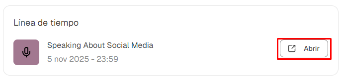Además, podemos ver la cantidad de horas que le hemos dedicado este mes a la aplicación:
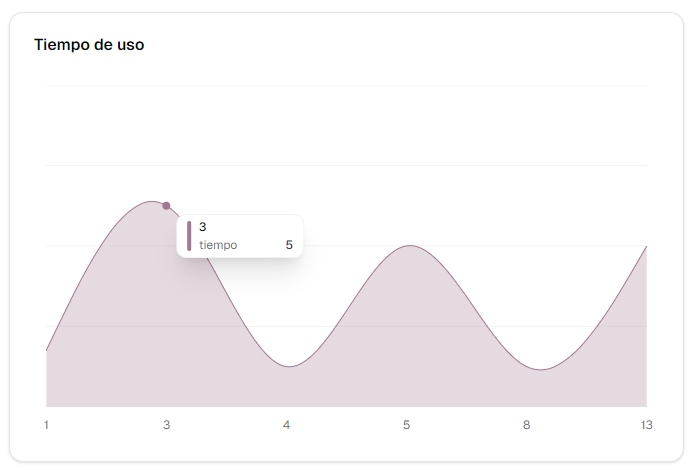Si queremos salir de la aplicación, simplemente pulsaremos en su botón correspondiente:
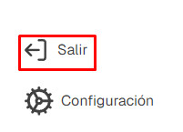Salir de la app
Si queremos salir de nuestra aplicación, pulsaremos en el botón correspondiente:
Leer
Si queremos añadir un nuevo documento, pinchamos en ‘Generar’:
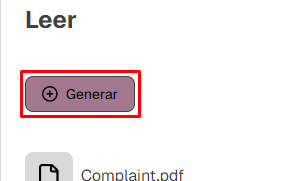El profesor estará atento a las frases y palabras que subrayes en el documento.
Una vez subrayada la palabra, te saldrá una cuadro de diálogo que te permitirá añadir la frase a el glosario del documento.
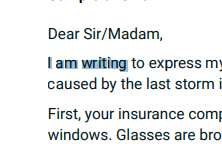Para acceder al glosario, tendrás que presionar en el botón ‘Apuntes’:
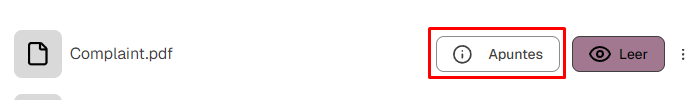Si queremos eliminar un documento, pinchamos en el menú de tres puntos y seleccionamos eliminar:
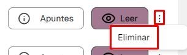Escribir
Para crear un nuevo documento, pinchamos en ‘Generar’:
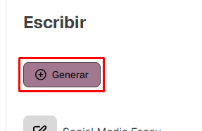Al crear un nuevo documento, podremos escribir en él y asignarle un nombre.
Además, podremos guardar los cambios pulsando en el icono de guardado:
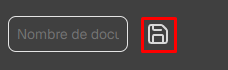Sin embargo, si el icono tiene más transparencia, entonces no hay cambios que se puedan guardar:
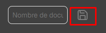Una vez escrito en el documento, podemos recibir retroalimentación de nuestro profesor.
Si queremos eliminar el documento, pinchamos en el menú de tres puntos y pulsamos en eliminar.
Hablar
Para crear una nueva conversación, pulsamos en el botón generar:
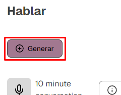Mientras hablamos, podemos apretar en el icono del micrófono para silenciarnos momentáneamente.
Una vez hemos terminado la conversación, podemos recibir tanto la transcripción como la retroalimentación.
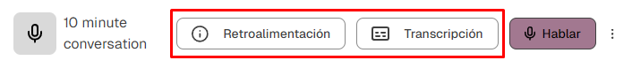Si queremos borrar la conversación, pincharemos en el menú de tres puntos y seleccionamos eliminar.
Tareas
Para acceder a las tareas que nos ha impuesto el profesor, simplemente pincharemos en el botón ‘Abrir’.
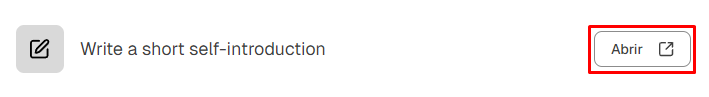Existen dos tipos de tareas:
- Escribir 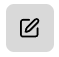
- Hablar 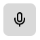
Chat
Para hablar con nuestro profesor, simplemente escribimos algo en el campo de texto correspondiente.
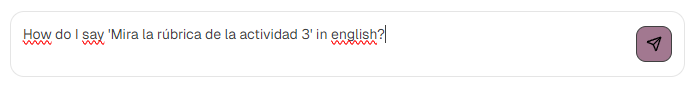Una vez hemos escrito nuestro comentario, pulsamos en el botón de envío o pulsamos la tecla ‘enter’:
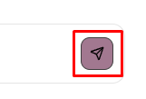Configuración
Si queremos acceder a la configuración de nuestra app, tendremos que dirigirnos al menú de vista lateral y pulsar en ‘Configuración’:

Para configurar nuestra app, tenemos a nuestra disposición las siguientes pestañas:
- Profesor
- Idioma
- Accesibilidad
Profesor
Podemos incrementar el nivel de exigencia del profesor habilitando la opción ‘Sistema estricto’:
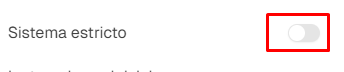Además, podemos proporcionarle instrucciones iniciales que tendrá en cuenta cada vez que hablemos con él:
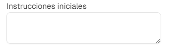Idioma
Si queremos que el idioma que estemos aprendiendo también se vea reflejado en la interfaz de KoroLang, tendremos que activar ‘Adaptar idioma al sistema’:
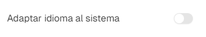Además, si queremos cambiar el idioma que estemos estudiando tendremos que seleccionar el nuevo idioma en ‘Idioma a estudiar’:
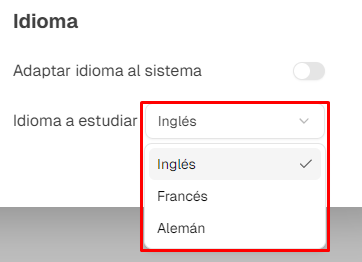Accesibilidad
Desde aquí podremos cambiar el tema de nuestra aplicación a las siguientes configuraciones:
- Claro
- Oscuro
- Sistema
Por defecto, el tema se mantiene en "Claro".

Posteriormente, podemos ajustar el tamaño del texto en caso de que no se pueda ver con claridad la letra:

Además, podremos reducir el número de animaciones que ocurren en la aplicación pinchando en este switch: